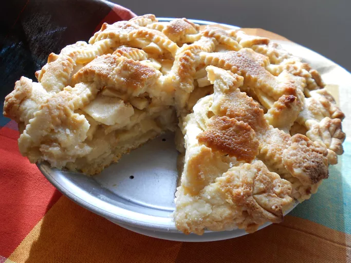

Apple Pie

Description
This amazing apple pie recipe belonged to my grandmother. I have never seen another one quite like it! It will always be
my favorite and has won several first place prizes in local competitions. It makes the perfect dessert for family dinners or
during the holidays.
Ingredients
- Apples
- Butter
- Flour
- Sugars
- Pie Crust
Steps
- Make the filling: On the stove, make a paste with flour and butter.
Add the sugar and water and bring to a boil. Simmer, then remove
from heat.
- Assemble the pie: Press one crust into a pie plate. Place the sliced
apples on the bottom crust. Use the top crust to make a lattice crust
according to the recipe below. Pour the butter-sugar mixture over the
lattice crust.
- Bake the pie: Bake the pie in a preheated oven until the apples are
soft and the crust is golden brown.